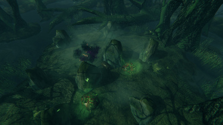

生物生成点
本地离线版支持中英文站内搜索。带 ↗ 的链接需联网；中文采用用户词表，各页来源版本见页脚。


生物生成点是持续生成敌对生物的可破坏实体。类型多样，各自生成特定敌人，通常可通过上方漂浮的深紫或绿色烟雾辨认。
生物生成器列表
生成机制
下文逐步说明生成过程，具体数值取决于生成点类型。
- 玩家进入20或60米内时激活。
- 每6或12秒尝试生成。
- 20米内已有2或3个敌人时，跳过生成；只统计此生成点能生成的敌人。
- 1000米内已有100个敌人时，跳过生成；只统计此生成点能生成的敌人。
- 在2.28、3或4米内尝试10次，寻找有效生成位置。
- 有效位置需要地面；灰矮人巢穴还要求地面没有遮蔽。
- 按权重随机选择生成的敌人种类。
- 随机提高生成敌人的等级，每级15%概率，最高2星。
例如灰矮人巢穴的普通灰矮人权重为5，暴徒权重为1，萨满权重为1，因此概率分别为72%、14%和14%。
| 类型 | 生成权重 | 激活距离 | 附近数量上限 | 间隔 | 生成半径 | 仅限地面 |
|---|---|---|---|---|---|---|
| 邪骨堆 | 骷髅怪 | 20m | 2 | 6s | 2.28m | |
| 灰矮人巢穴 | 灰矮人5，暴徒1，萨满1 | 60m | 3 | 12s | 4m | 是 |
| 尸体堆 | 尸鬼4，精英1，远程2 | 20m | 2 | 6s | 3m |
- 生成权重：可生成的敌人种类及相对权重。
- 激活距离：生成器启用所需距离。
- 附近上限：20米内最大个体数量。
- 间隔：每次生成相隔的秒数。
- 生成半径：生成位置距生成器的最远距离。
- 仅地面：要求无遮挡地面。建屋顶会使生成失败，地板应该也会阻止。
说明
A Creature spawner is a destructible entity that continuously spawns hostile creatures. These come in various types, each having their own unique enemies they spawn. They can usually be identified by a dark purple or green smoke that floats above them.
List of Creature Spawners
- Greydwarf Nest
- Evil Bone Pile
- Body Pile
- Monument of Torment
- Monument of Torment (Elite)
- Effigy of Malice
Spawning Mechanics
Below is the step-by-step process for spawning. The exact numerical value depends on the type of spawner.
- Become active if there is a player within 20 or 60 meters.
- Try to spawn every 6 or 12 seconds.
- Skip spawning if there is 2 or 3 enemies within 20 meters. Only counts enemies that the spawner can spawn.
- Skip spawning if there is 100 enemies within 1000 meters. Only counts enemies that the spawner can spawn.
- Try 10 times to find a valid spawn point within 2.28, 3 or 4 meters.
- Valid spawnpoint requires ground. Greydwarf nest also requires that the ground is not covered.
- Randomly select the spawned enemy type (chances depend on the weight).
- Randomly level up the spawned enemy (15% chance per level up), up to 2 stars.
For example Greydwarf nest has 5 weight for Greydwarf, 1 weight for Brute and 1 weight for Shaman. These end up as 72% chance for Greydwarf, 14% chance for Brute and 14% chance for Shaman.
| Type | Spawn weights | Active distance | Max near | Interval | Spawn radius | Only ground |
|---|---|---|---|---|---|---|
| Evil bone pile | Skeleton | 20m | 2 | 6s | 2.28m | |
| Greydwarf nest | Greydwarf 5, Brute 1, Shaman 1 | 60m | 3 | 12s | 4m | Yes |
| Body pile | Draugr 4, Elite 1, Ranged 2 | 20m | 2 | 6s | 3m |
- Spawn weights: Enemy types to spawn and their relative spawn weight.
- Active distance: Distance to activate the spawner.
- Max near: Maximum amount of units within 20 meters.
- Interval: How many seconds per spawn.
- Spawn radius: Spawn location max distance from the spawner.
- Only ground: Requires uncovered ground. If you build roof then the spawning fails (floor should work too).
Notes
- Creature spawners are not suppressed by Player base structures unlike spawn zones and spawn points.
- Fire geysers are not a creature spawner, as they are not destructible and their spawning works a little differently. They are a spawn point.